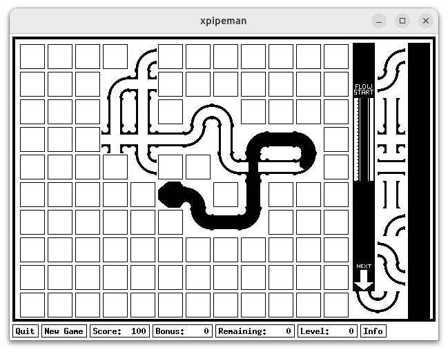

xpipeman is a classic pipe-connecting puzzle game adapted for recent ubuntu linux releases. Get the source code from:
 View on GitLab View on GitHub
xpipeman is a classic pipe-connecting puzzle game adapted for recent ubuntu linux releases. Get the source code from: